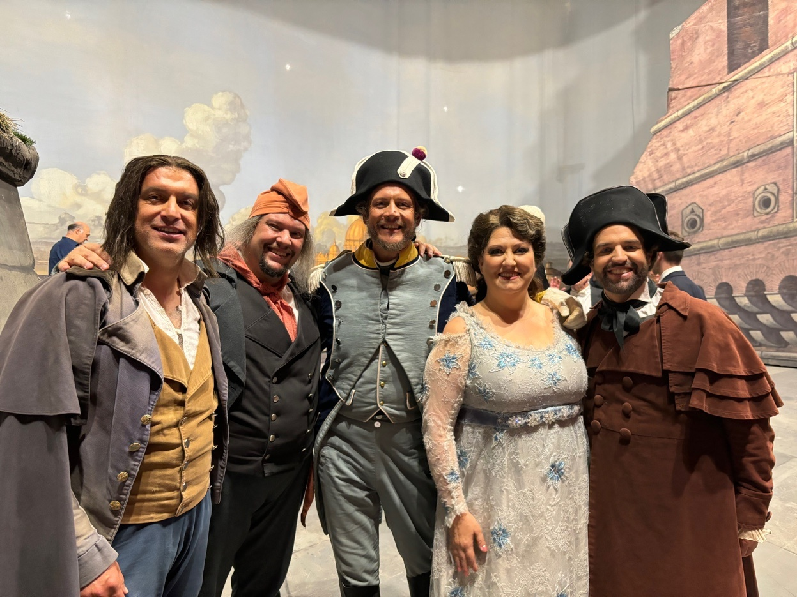
Basso con un repertorio che spazia da Mozart a Puccini. Ruoli principali nei maggiori teatri d'opera italiani e internazionali, con collaborazioni con artisti e direttori di fama mondiale.
Teatro dell'Opera di Roma — Ruoli solistici
G. Verdi
Ruolo: Un Commissionario
G. Puccini
Ruolo: Un Doganiere
Allestimento in collaborazione con Palau de les Arts Reina Sofía, Valencia

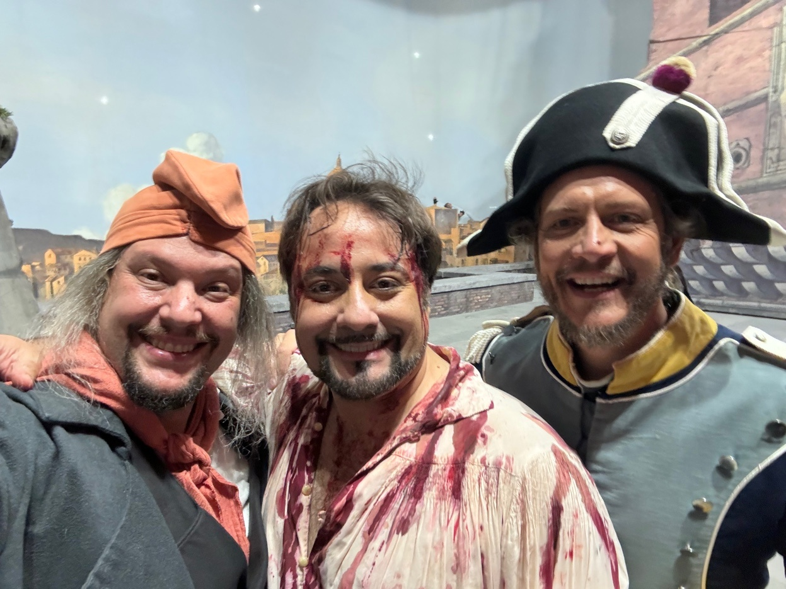
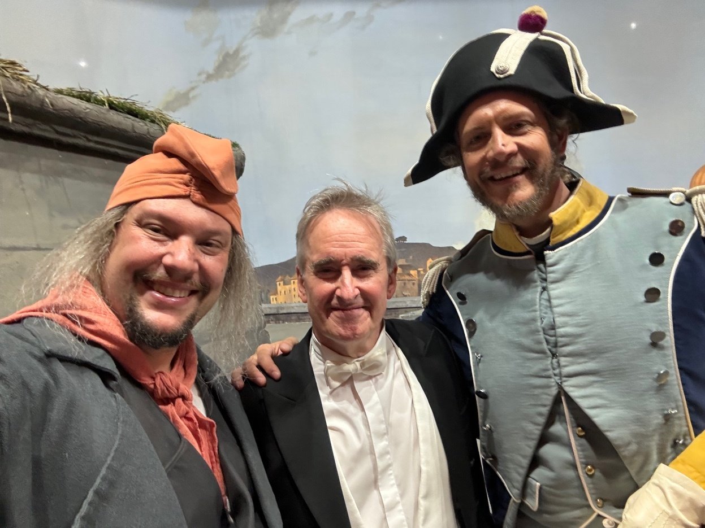
G. Puccini
Ruolo: Un Carceriere
Ricostruzione storica dell'allestimento originale del 1900
G. F. Händel
Ruolo: Mr. Leveridge
Nuovo allestimento in collaborazione con De Nationale Opera, Amsterdam
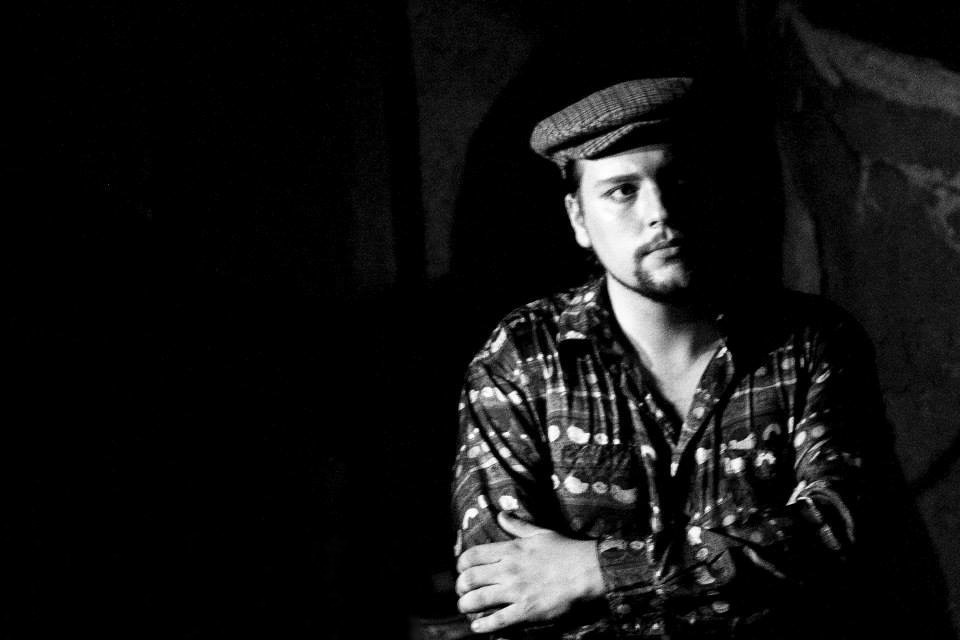
Galleria di scena
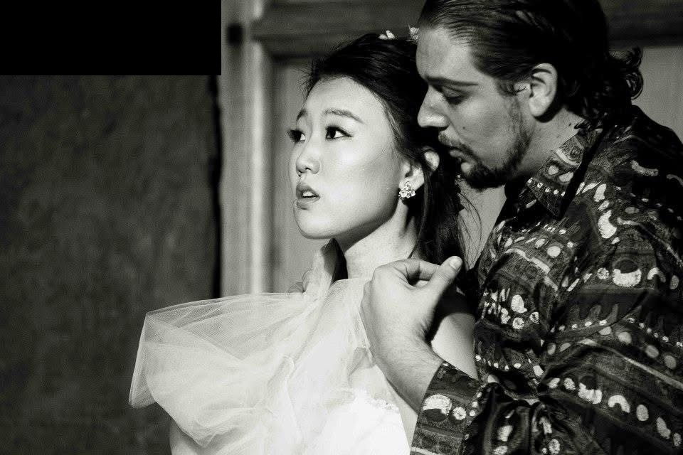
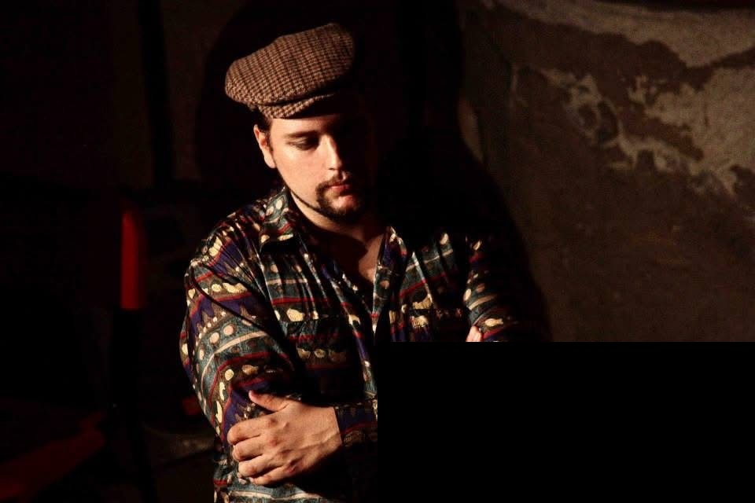
W. A. Mozart
Ruolo: Don Giovanni
W. A. Mozart
Ruolo: Figaro
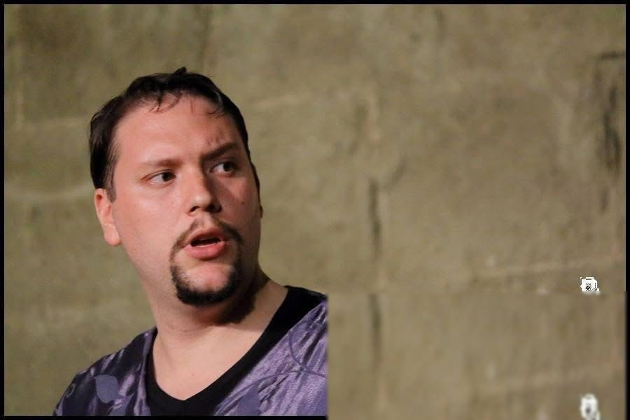
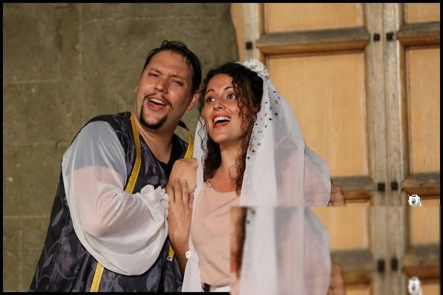
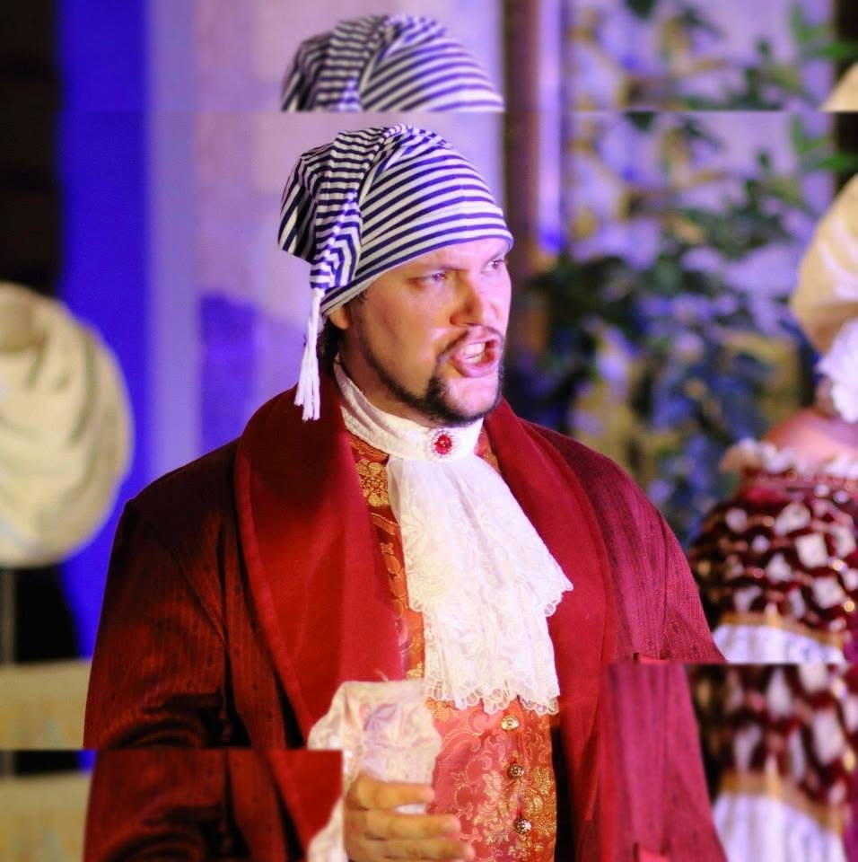
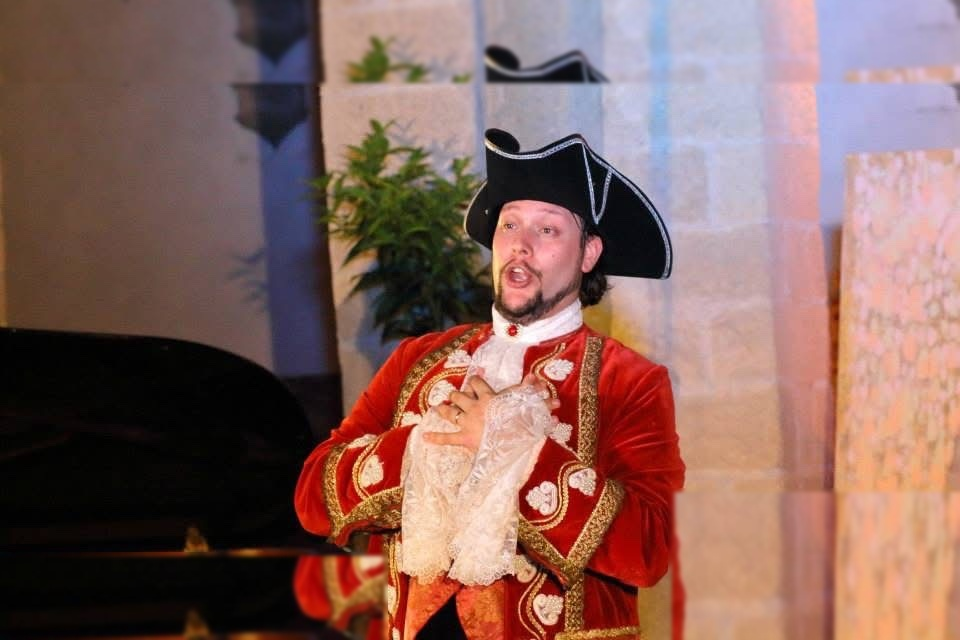
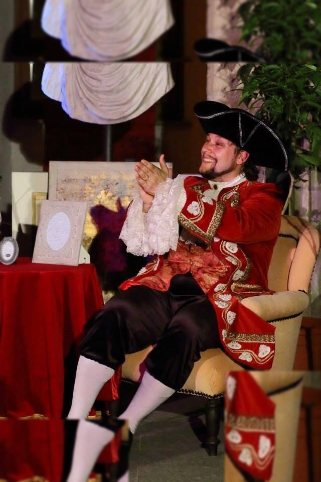
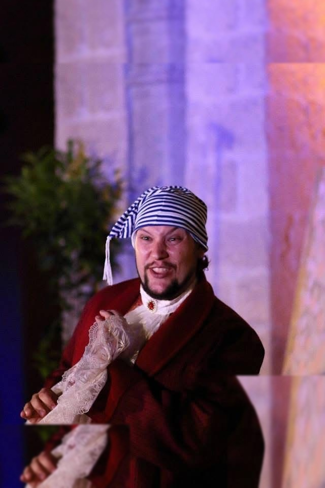
G. Rossini
Ruolo: Don Magnifico
G. B. Pergolesi
Ruolo: Uberto
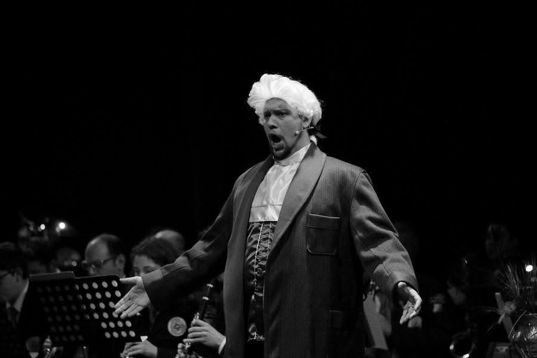
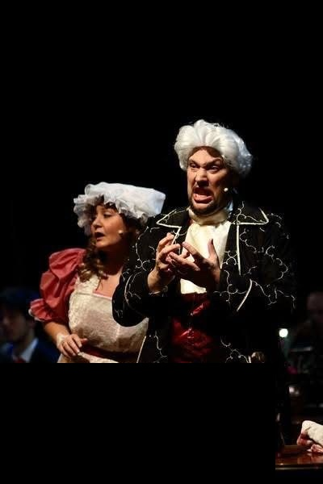
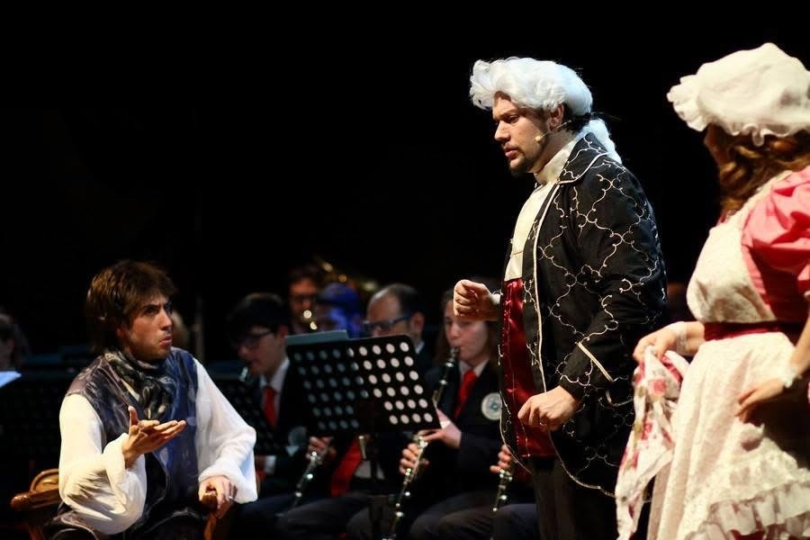
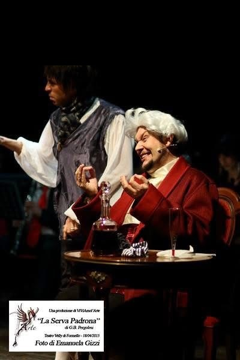
Repertorio completo
| Compositore | Opera | Ruoli |
|---|---|---|
| W. A. Mozart | Don Giovanni | Don Giovanni · Leporello |
| W. A. Mozart | Le nozze di Figaro | Figaro · Don Bartolo · Antonio |
| W. A. Mozart | Così fan tutte | Don Alfonso |
| W. A. Mozart | Il Flauto Magico | Oratore |
| G. F. Händel | Alcina | Mr. Leveridge |
| G. Rossini | Il Barbiere di Siviglia | Don Bartolo · Don Basilio · Ufficiale |
| G. Rossini | La Cenerentola | Don Magnifico · Alidoro |
| G. Rossini | La scala di seta | Blansac |
| G. Donizetti | L'Elisir d'Amore | Dulcamara |
| G. Donizetti | Don Pasquale | Don Pasquale |
| G. Verdi | Rigoletto | Sparafucile |
| G. Verdi | La Traviata | Marchese · Barone · Commissionario |
| G. Verdi | Il Trovatore | Ferrando |
| G. Verdi | Aida | Ramfis |
| G. Verdi | Attila | Papa Leone |
| G. Puccini | Tosca | Angelotti · Sciarrone · Carceriere |
| G. Puccini | La Bohème | Doganiere |
| G. B. Pergolesi | La Serva Padrona | Uberto |
| A. Piazzolla | Maria de Buenos Aires | Ladrones |
Musical — Teatro Sistina · PeepArrow Entertainment
Regia: Massimo Romeo Piparo
Evita — il Musical
Con Malika Ayane e Filippo Strocchi
Ruolo: Ammiraglio · Vocal Coach · Direttore dei Cori
Regia: Massimo Romeo Piparo
Billy Elliot — Il Musical
Con Luca Biagini, Cristina Noci
Ruolo: Minatore · Vocal Coach · Direttore dei Cori
Regia: Massimo Romeo Piparo
Tutti Insieme Appassionatamente
Con Luca Ward, Vittoria Belvedere
Ruolo: Franz, il maggiordomo · Vocal Coach · Direttore dei Cori
Regia: Massimo Romeo Piparo
My Fair Lady
Con Luca Ward, Vittoria Belvedere, Aldo Ralli
Ruolo: Barista
Concerti selezionati
Cappella Musicale Pontificia Sistina — Cantore
Sante Messe in diretta mondiale · RAI · Vatican Media – CTV
Notte dell'Opera — Macerata Opera Festival
Macerata
Concerto SIAE "Saranno Famosi" — con Pamela Villoresi
Teatro Il Sistina · Direttore Emanuele Friello
"Una Donna Decomposta" — con Fioretta Mari
"New York New York" — con Ugo Pagliai